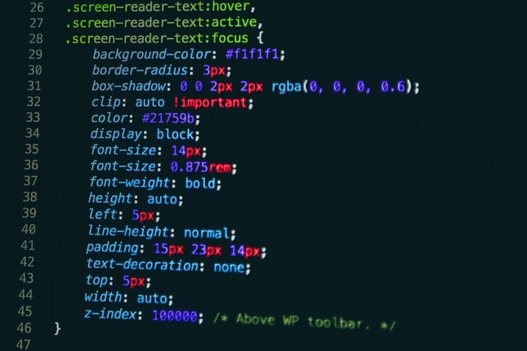
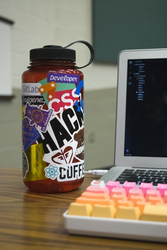

Here we go, huge list of HTML elements ahead. Brace yourself. Reminder! All elements should be put between "<" and ">" when writing the code.
Main root
-
"html" - This HTML element represents the root (top-level element) of an HTML document, so it is also referred to as the root element. All other elements must be descendants of this element.
Document metadata
Metadata contains information about the page. This includes information about styles, scripts and data to help software (search engines, browsers, etc.) use and render the page. Metadata for styles and scripts may be defined in the page or link to another file that has the information.
-
"head" - The HTML "head" element provides general information (metadata) about the document, including its title and links to its scripts and style sheets.
-
"link" - The HTML External Resource Link element ("link") specifies relationships between the current document and an external resource. This element is most commonly used to link to stylesheets, but is also used to establish site icons (both "favicon" style icons and mobile home screen/app icons) among other things.
-
"meta" - The HTML "meta" element represents metadata that cannot be represented by other HTML meta-related elements, like "base", "link", "script", "style" or "title".
-
"style" - The HTML "style" element contains style information for a document, or part of a document.
-
"title" - The HTML Title element ("title") defines the document's title that is shown in a browser's title bar or a page's tab.
Sectioning root
-
"body" - The HTML "body" Element represents the content of an HTML document. There can be only one "body" element in a document.
Content sectioning
Content sectioning elements allow you to organize the document content into logical pieces. Use the sectioning elements to create a broad outline for your page content, including header and footer navigation, and heading elements to identify sections of content.
-
"address" - The HTML "address" element indicates that the enclosed HTML provides contact information for a person or people, or for an organization.
-
"article" - The HTML "article" element represents a self-contained composition in a document, page, application, or site, which is intended to be independently distributable or reusable (e.g., in syndication). Examples include: a forum post, a magazine or newspaper article, or a blog entry.
-
"aside - The HTML "aside" element represents a portion of a document whose content is only indirectly related to the document's main content.
-
"footer" - The HTML "footer" element represents a footer for its nearest sectioning content or sectioning root element. A footer typically contains information about the author of the section, copyright data or links to related documents.
-
"header" - The HTML "header" element represents introductory content, typically a group of introductory or navigational aids. It may contain some heading elements but also other elements like a logo, a search form, an author name, and so on.
-
"h1", "h2", "h3", "h4", "h5", "h6" - The HTML "h1"–"h6" elements represent six levels of section headings. "h1" is the highest section level and "h6" is the lowest.
-
"hgroup" - The HTML "hgroup" element represents a multi-level heading for a section of a document. It groups a set of "h1"–"h6" elements.
-
"main" - The HTML "main" element represents the dominant content of the "body" of a document. The main content area consists of content that is directly related to or expands upon the central topic of a document, or the central functionality of an application.
-
"nav" - The HTML "nav" element represents a section of a page whose purpose is to provide navigation links, either within the current document or to other documents. Common examples of navigation sections are menus, tables of contents, and indexes.
-
"section" - The HTML "section" element represents a standalone section — which doesn't have a more specific semantic element to represent it — contained within an HTML document.
Text content
Use HTML text content elements to organize blocks or sections of content placed between the opening "body" and closing "/body" tags. Important for accessibility and SEO, these elements identify the purpose or structure of that content.
-
"blockquote" - The HTML "blockquote" Element (or HTML Block Quotation Element) indicates that the enclosed text is an extended quotation. Usually, this is rendered visually by indentation (see Notes for how to change it). A URL for the source of the quotation may be given using the cite attribute, while a text representation of the source can be given using the "cite" element.
-
"dd" - The HTML "dd" element provides the details about or the definition of the preceding term ("dt") in a description list ("dl").
-
"dir" - The obsolete HTML Directory element ("dir") is used as a container for a directory of files and/or folders, potentially with styles and icons applied by the user agent.
-
"div" - The HTML Content Division element ("div") is the generic container for flow content. It has no effect on the content or layout until styled using CSS.
-
"dl" - The HTML "dl" element represents a description list. The element encloses a list of groups of terms (specified using the "dt" element) and descriptions (provided by "dd" elements). Common uses for this element are to implement a glossary or to display metadata (a list of key-value pairs).
-
"dt" - The HTML "dt" element specifies a term in a description or definition list, and as such must be used inside a "dl" element.
-
"figcaption" - The HTML "figcaption" element represents a caption or legend for the rest of the contents its parent "figure" element, if any.
-
"figure" - The HTML "figure" element represents self-contained content, frequently with a caption ("figcaption"), and is typically referenced as a single unit.
-
"hr" - The HTML "hr" element represents a thematic break between paragraph-level elements: for example, a change of scene in a story, or a shift of topic with a section.
-
"li" - The HTML "li" element is used to represent an item in a list. It must be contained in a parent element: an ordered list ("ol"), an unordered list ("ul"), or a menu ("menu"). In menus and unordered lists, list items are usually displayed using bullet points. In ordered lists, they are usually displayed with an ascending counter on the left, such as a number or letter.
-
"ol" - The HTML "ol" element represents an ordered list of items, typically rendered as a numbered list.
-
"p" - The HTML "p" element represents a paragraph.
-
"pre" - The HTML "pre" element represents preformatted text which is to be presented exactly as written in the HTML file.
-
"ul" - The HTML "ul" element represents an unordered list of items, typically rendered as a bulleted list.
Inline text semantics
Use the HTML inline text semantic to define the meaning, structure, or style of a word, line, or any arbitrary piece of text.
-
"a" - The HTML "a" element (or anchor element) creates a hyperlink to other web pages, files, locations within the same page, email addresses, or any other URL.
-
"abbr" - The HTML Abbreviation element ("abbr") represents an abbreviation or acronym; the optional title attribute can provide an expansion or description for the abbreviation.
-
"b" - The HTML Bring Attention To element ("b") is used to draw the reader's attention to the element's contents, which are not otherwise granted special importance.
-
"bdi" - The HTML Bidirectional Isolate element ("bdi") tells the browser's bidirectional algorithm to treat the text it contains in isolation from its surrounding text.
-
"bdo" - The HTML Bidirectional Text Override element ("bdo") overrides the current directionality of text, so that the text within is rendered in a different direction.
-
"br" - The HTML "br" element produces a line break in text (carriage-return). It is useful for writing a poem or an address, where the division of lines is significant.
-
"cite" - The HTML Citation element ("cite") is used to describe a reference to a cited creative work, and must include either the title or author or the URL of that work.
-
"code" - The HTML "code" element displays its contents styled in a fashion intended to indicate that the text is a short fragment of computer code.
-
"data" - The HTML "data" element links a given content with a machine-readable translation. If the content is time- or date-related, the "time" element must be used.
-
"dfn" - The HTML Definition element ("dfn") is used to indicate the term being defined within the context of a definition phrase or sentence.
-
"em" - The HTML "em" element marks text that has stress emphasis. The "em" element can be nested, with each level of nesting indicating a greater degree of emphasis.
-
"i" - The HTML "i" element represents a range of text that is set off from the normal text for some reason. Some examples include technical terms, foreign language phrases, or fictional character thoughts. It is typically displayed in italic type.
-
"kbd" - The HTML Keyboard Input element ("kbd") represents a span of inline text denoting textual user input from a keyboard, voice input, or any other text entry device.
-
"mark" - The HTML Mark Text element ("mark") represents text which is marked or highlighted for reference or notation purposes, due to the marked passage's relevance or importance in the enclosing context.
-
"q" - The HTML "q" element indicates that the enclosed text is a short inline quotation. Most modern browsers implement this by surrounding the text in quotation marks.
-
"rb" - The HTML Ruby Base ("rb") element is used to delimit the base text component of a "ruby" annotation, i.e. the text that is being annotated.
-
"rp" - The HTML Ruby Fallback Parenthesis ("rp") element is used to provide fall-back parentheses for browsers that do not support display of ruby annotations using the "ruby" element.
-
"rt" - The HTML Ruby Text ("rt") element specifies the ruby text component of a ruby annotation, which is used to provide pronunciation, translation, or transliteration information for East Asian typography. The "rt" element must always be contained within a "ruby" element.
-
"rtc" - The HTML Ruby Text Container ("rtc") element embraces semantic annotations of characters presented in a ruby of "rb" elements used inside of "ruby" element. "rb" elements can have both pronunciation ("rt") and semantic ("rtc") annotations.
-
"ruby" - The HTML "ruby" element represents a ruby annotation. Ruby annotations are for showing pronunciation of East Asian characters. (if you are reading this, you just won't make a website using East Asian characters, right?)
-
"s" - The HTML "s" element renders text with a strikethrough, or a line through it. Use the "s" element to represent things that are no longer relevant or no longer accurate. However, "s" is not appropriate when indicating document edits; for that, use the "del" and "ins" elements, as appropriate.
-
"samp" - The HTML Sample Element ("samp") is used to enclose inline text which represents sample (or quoted) output from a computer program.
-
"small" - The HTML "small" element makes the text font size one size smaller (for example, from large to medium, or from small to x-small) down to the browser's minimum font size. In HTML5, this element is repurposed to represent side-comments and small print, including copyright and legal text, independent of its styled presentation.
-
"span" - The HTML "span" element is a generic inline container for phrasing content, which does not inherently represent anything. It can be used to group elements for styling purposes (using the class or id attributes), or because they share attribute values, such as lang.
-
"strong" - The HTML Strong Importance Element ("strong") indicates that its contents have strong importance, seriousness, or urgency. Browsers typically render the contents in bold type.
-
"sub" - The HTML Subscript element ("sub") specifies inline text which should be displayed as subscript for solely typographical reasons.
-
"sup" - The HTML Superscript element ("sup") specifies inline text which is to be displayed as superscript for solely typographical reasons.
-
"time" - The HTML "time" element represents a specific period in time. It may include the datetime attribute to translate dates into machine-readable format, allowing for better search engine results or custom features such as reminders.
-
"tt" - The obsolete HTML Teletype Text element ("tt") creates inline text which is presented using the user agent's default monospace font face.
-
"u" - The HTML Unarticulated Annotation element ("u") represents a span of inline text which should be rendered in a way that indicates that it has a non-textual annotation.
-
"var" - The HTML Variable element ("var") represents the name of a variable in a mathematical expression or a programming context.
-
"wbr" - The HTML "wbr" element represents a word break opportunity—a position within text where the browser may optionally break a line, though its line-breaking rules would not otherwise create a break at that location.


Image and multimedia
HTML supports various multimedia resources such as images, audio, and video.
-
"area" - The HTML "area" element defines a hot-spot region on an image, and optionally associates it with a hypertext link. This element is used only within a "map" element.
-
"audio" - The HTML "audio" element is used to embed sound content in documents. It may contain one or more audio sources, represented using the src attribute or the "source" element: the browser will choose the most suitable one. It can also be the destination for streamed media, using a MediaStream.
-
"img" - The HTML "img" element embeds an image into the document. It is a replaced element.
-
"map" - The HTML "map" element is used with "area" elements to define an image map (a clickable link area).
-
"track" - The HTML "track" element is used as a child of the media elements "audio" and "video". It lets you specify timed text tracks (or time-based data), for example to automatically handle subtitles. The tracks are formatted in WebVTT format (.vtt files) — Web Video Text Tracks or Timed Text Markup Language (TTML).
-
"video" - The HTML Video element ("video") embeds a media player which supports video playback into the document.
Embedded content
In addition to regular multimedia content, HTML can include a variety of other content, even if it's not always easy to interact with.
-
"applet" - The obsolete HTML Applet Element ("applet") embeds a Java applet into the document; this element has been deprecated in favor of "object".
-
"embed" - The HTML "embed" element embeds external content at the specified point in the document. This content is provided by an external application or other source of interactive content such as a browser plug-in.
-
"iframe" - The HTML Inline Frame element ("iframe") represents a nested browsing context, effectively embedding another HTML page into the current page.
-
"noembed" - The "noembed" element is an obsolete, non-standard way to provide alternative, or "fallback", content for browsers that do not support the "embed" element or do not support the type of embedded content an author wishes to use.
-
"object" - The HTML "object" element represents an external resource, which can be treated as an image, a nested browsing context, or a resource to be handled by a plugin.
-
"param" - The HTML "param" element defines parameters for an "object" element.
-
"picture" - The HTML "picture" element contains zero or more "source" elements and one "img" element to provide versions of an image for different display/device scenarios.
-
"source" - The HTML "source" element specifies multiple media resources for the "picture", the "audio" element, or the "video" element. It is an empty element. It is commonly used to serve the same media content in multiple formats supported by different browsers.
Scripting
In order to create dynamic content and Web applications, HTML supports the use of scripting languages, most prominently JavaScript. Certain elements support this capability.
-
"canvas" - Use the HTML "canvas" element with either the canvas scripting API or the WebGL API to draw graphics and animations.
-
"noscript" - The HTML "noscript" element defines a section of HTML to be inserted if a script type on the page is unsupported or if scripting is currently turned off in the browser.
-
"script" - The HTML "script" element is used to embed or reference executable code; this is typically used to embed or refer to JavaScript code.
Demarcating edits
These elements let you provide indications that specific parts of the text have been altered.
-
"del" - The HTML "del" element represents a range of text that has been deleted from a document.
-
"ins" - The HTML "ins" element represents a range of text that has been added to a document.
Table content
The elements here are used to create and handle tabular data.
-
"caption" - The HTML Table Caption element ("caption") specifies the caption (or title) of a table, and if used is always the first child of a "table".
-
"col" - The HTML "col" element defines a column within a table and is used for defining common semantics on all common cells. It is generally found within a "colgroup" element.
-
"colgroup" - The HTML "colgroup" element defines a group of columns within a table.
-
"table" - The HTML "table" element represents tabular data — that is, information presented in a two-dimensional table comprised of rows and columns of cells containing data.
-
"tbody" - The HTML Table Body element ("tbody") encapsulates a set of table row ("tr" elements), indicating that they comprise the body of the table ("table").
-
"td" - The HTML "td" element defines a cell of a table that contains data. It participates in the table model.
-
"tfoot" - The HTML "tfoot" element defines a set of rows summarizing the columns of the table.
-
"th" - The HTML "th" element defines a cell as header of a group of table cells. The exact nature of this group is defined by the scope and headers attributes.
-
"thead" - The HTML "thead" element defines a set of rows defining the head of the columns of the table.
-
"tr" - The HTML "tr" element defines a row of cells in a table. The row's cells can then be established using a mix of "td" (data cell) and "th" (header cell) elements.The HTML "tr" element specifies that the markup contained inside the "tr" block comprises one row of a table, inside which the "th" and "td" elements create header and data cells, respectively, within the row.
Forms
HTML provides a number of elements which can be used together to create forms which the user can fill out and submit to the Web site or application. There's a great deal of further information about this available in the HTML forms guide.
-
"button" - The HTML "button" element represents a clickable button, which can be used in forms or anywhere in a document that needs simple, standard button functionality.
-
"datalist" - The HTML "datalist" element contains a set of "option" elements that represent the values available for other controls.
-
"fieldset" - The HTML "fieldset" element is used to group several controls as well as labels ("label") within a web form.
-
"form" - The HTML "form" element represents a document section that contains interactive controls for submitting information to a web server.
-
"input" - The HTML "input" element is used to create interactive controls for web-based forms in order to accept data from the user; a wide variety of types of input data and control widgets are available, depending on the device and user agent.
-
"label" - The HTML "label" element represents a caption for an item in a user interface.
-
"legend" - The HTML "legend" element represents a caption for the content of its parent "fieldset".
-
"meter" - The HTML "meter" element represents either a scalar value within a known range or a fractional value.
-
"optgroup" - The HTML "optgroup" element creates a grouping of options within a "select" element.
-
"option" - The HTML "option" element is used to define an item contained in a "select", an "optgroup", or a "datalist" element. As such, "option" can represent menu items in popups and other lists of items in an HTML document.
-
"output" - The HTML Output element ("output") is a container element into which a site or app can inject the results of a calculation or the outcome of a user action.
-
"progress" - The HTML "progress" element displays an indicator showing the completion progress of a task, typically displayed as a progress bar.
-
"select" - The HTML "select" element represents a control that provides a menu of options
-
"textarea" - The HTML "textarea" element represents a multi-line plain-text editing control, useful when you want to allow users to enter a sizeable amount of free-form text, for example a comment on a review or feedback form.
Interactive elements
HTML offers a selection of elements which help to create interactive user interface objects.
-
"details" - The HTML Details Element ("details") creates a disclosure widget in which information is visible only when the widget is toggled into an "open" state.
-
"dialog" - The HTML "dialog" element represents a dialog box or other interactive component, such as an inspector or window.
-
"menu" - The HTML "menu" element represents a group of commands that a user can perform or activate. This includes both list menus, which might appear across the top of a screen, as well as context menus, such as those that might appear underneath a button after it has been clicked.
-
"menuitem" - The HTML "menuitem" element represents a command that a user is able to invoke through a popup menu. This includes context menus, as well as menus that might be attached to a menu button.
-
"summary" - The HTML Disclosure Summary element ("summary") element specifies a summary, caption, or legend for a "details" element's disclosure box.
Web Components
Web Components is an HTML-related technology which makes it possible to, essentially, create and use custom elements as if it were regular HTML. In addition, you can create custom versions of standard HTML elements.
-
"content" - The HTML "content" element - an obsolete part of the Web Components suite of technologies - was used inside of Shadow DOM as an insertion point, and wasn't meant to be used in ordinary HTML.
-
"element" - The obsolete HTML "element" element was part of the Web Components specification; it was intended to be used to define new custom DOM elements.
-
"shadow" - The HTML "shadow" element - an obsolete part of the Web Components technology suite - was intended to be used as a shadow DOM insertion point.
-
"slot" - The HTML "slot" element - part of the Web Components technology suite - is a placeholder inside a web component that you can fill with your own markup, which lets you create separate DOM trees and present them together.
-
"template" - The HTML Content Template ("template") element is a mechanism for holding client-side content that is not to be rendered when a page is loaded but may subsequently be instantiated during runtime using JavaScript.